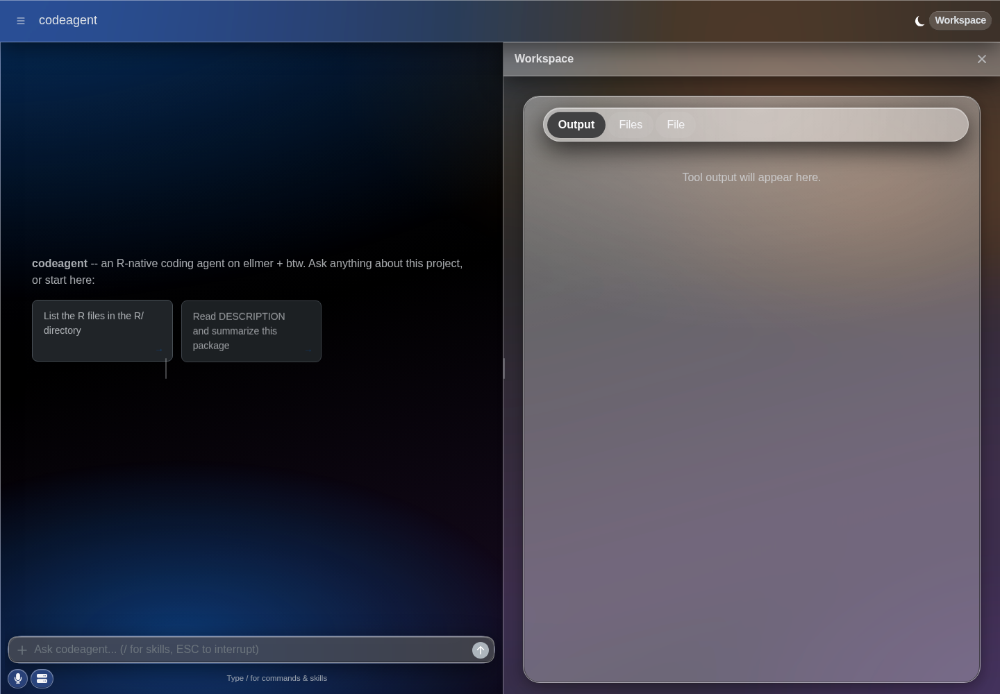

Language: English | 简体中文
codeagent_app() supports both its classic embedded-chat
layout and shinychat’s full-window page_chat layout.
Built-in themes use the same bslib foundation in both layouts; the
screenshots below show the page_chat layout, where the
sidebar, global toolbar, chat canvas, composer, and Workspace drawer are
all visible.
Liquid Glass
The optional glass theme delegates its material
rendering, live intensity, tint, specular highlights, and accessibility
fallbacks to shinyglass.
codeagent adds only a thin adapter for shinychat’s header, sidebar,
drawer, and composer surfaces.
Dark mode

The same app after switching the bslib color-mode control to dark mode.
Both screenshots were captured at 1440 x 1000 in real Chromium with
intensity = 0.45 and tint = FALSE. The
dark-mode control updates bslib and shinyglass together at runtime.
Install the exact shinyglass build verified by codeagent, then create the theme:
pak::pak(
"ericrayanderson/shinyglass@e07c0ae7b9cdf7959eace05c7ac32481f06d5a7c"
)
liquid_theme <- codeagent_theme(
"glass",
preset = "auto",
intensity = 0.45,
tint = FALSE,
specular = TRUE
)
codeagent_app(
client,
ui_layout = "page_chat",
theme = liquid_theme
)Use shinyglass’s public runtime controls when a host application
needs to adjust the material dynamically. For example,
window.shinyglass.setIntensity(0.8) increases both opacity
and blur without replacing the codeagent theme.
Other built-in themes
The remaining built-ins do not require shinyglass:
| Theme | Appearance |
|---|---|
default |
The standard shinychat/bslib page theme |
ios |
Grouped canvas, bright cards, and compact iOS-like surfaces |
aurora |
Ambient blue-indigo-purple lighting with selective frosted chrome |
flatly |
Light Bootswatch theme |
darkly |
Dark Bootswatch theme |
Pass a name directly to codeagent_app() or build a
reusable theme object:
codeagent_app(client, ui_layout = "page_chat", theme = "aurora")
ios_theme <- codeagent_theme(
"ios",
primary = "#0057d9",
`shiny-chat-page-canvas-bg` = "#ffffff"
)
codeagent_app(client, ui_layout = "page_chat", theme = ios_theme)Arbitrary bslib and shinychat::page_chat_theme() objects
also pass through unchanged. To preview a built-in without configuring a
model request, run: